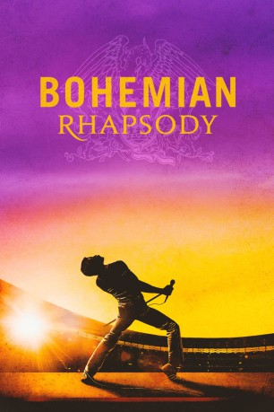

#10499 Bohemian Rhapsody
Auszeichnungen: 2 GoldenGlobes gewonnen
 gesehen am 18.01.2019
gesehen am 18.01.2019
 
 IMDB-Wertung: 8.3 / 10
IMDB-Wertung: 8.3 / 10  Tomatometer: 61
Tomatometer: 61  Metascore: 49
Metascore: 49 
"Bohemian Rhapsody" erzählt die Geschichte wie Freddie Mercury und seine Bandmitglieder Brian May, Roger Taylor und John Deacon Queen gründeten – eine der legendärsten Rockgruppen aller Zeiten. Durch so grundverschiedene Songs wie „Killer Queen”, „Bohemian Rhapsody”, „We Are The Champions” und „We Will Rock You” sowie unzählige weitere Songs gelang der Band ein beispielloser Erfolg, der Freddie zu einem der beliebtesten Entertainer weltweit machte. Doch hinter der Fassade von Erfolg kämpft Freddie mit seiner inneren Zerrissenheit. Der aus Sansibar stammende Parse sucht unablässig nach seinem Platz in der Welt, während er gleichzeitig versucht, sich in einer Gesellschaft, die in Stereotypen und Erwartungen gefangen ist, mit einer Sexualität zu arrangieren, die er selbst kaum definieren kann. Freddie wagt es, sich zu widersetzen, aber zahlt auch den Preis dafür...
Jahr: 2018
Dauer: 135 Minuten
FSK: 6
Land: England Studio: 20th Century FoxTonspuren: DD5.1 - , - , - ,
Untertitel: Deutsch, Englisch,
Auflösung: 1080p (1920x800) Größe: 7976 MB
Genre: Drama, Musik, Biographie
Regisseur:  Bryan Singer
Bryan Singer
Drehbuch: Anthony McCarten, Peter Morgan, Anthony McCarten
Soundtrack: John Ottman
Darsteller:
 Rami Malek als Freddie Mercury
Rami Malek als Freddie Mercury Lucy Boynton als Mary Austin
Lucy Boynton als Mary Austin- Gwilym Lee als Brian May
 Ben Hardy als Roger Taylor
Ben Hardy als Roger Taylor Joseph Mazzello als John Deacon
Joseph Mazzello als John Deacon Aidan Gillen als John Reid
Aidan Gillen als John Reid Allen Leech als Paul Prenter
Allen Leech als Paul Prenter Tom Hollander als Jim Beach
Tom Hollander als Jim Beach Mike Myers als Ray Foster
Mike Myers als Ray Foster- Aaron McCusker als Jim Hutton
- Meneka Das als Jer Bulsara
- Ace Bhatti als Bomi Bulsara
- Priya Blackburn als Kashmira Bulsara
- Dermot Murphy als Bob Geldof
- Dickie Beau als Kenny Everett
 Tim Plester als RT Baker
Tim Plester als RT Baker Jack Roth als Tim Staffell
Jack Roth als Tim Staffell Max Bennett als David
Max Bennett als David- Neil Fox-Roberts als Mary's Father
 Ross Green als Reporter 1
Ross Green als Reporter 1 Bruce Mackinnon als Reporter 2
Bruce Mackinnon als Reporter 2- Joshua Higgott als Reporter 3
- Pat Lally als Reporter 4
 Michelle Duncan als Shelley Stern
Michelle Duncan als Shelley Stern- Martin Oelbermann als German TV Journalist
- Matt Greenwood als Young Man at Clinic
- Royce Cronin als TV Director
- Andrew Bowerman als Smile Audience Member
- Jess Radomska als Cheryl
- Haf Gibson als Roger's Girlfriend 1
- Rosy Benjamin als Dominique
- Leila Crerar als Chrissie
- Katherine Newman als Veronica
- Adam Rauf als Young Farrokh
- Philip Andrew als Mack
- John Ottman als Live TV Director
- James Wallace als Technical Director
 Vincent Andriano als Meat Packer One (uncredited)
Vincent Andriano als Meat Packer One (uncredited) Trinity L Beals als Security Guard (uncredited)
Trinity L Beals als Security Guard (uncredited)- Morten Bekkenes als Journalist (uncredited)
- Jonathan Cheetham als Kissing Gay Man (1985) (uncredited)
- Michael Cobb als Baggage handler (uncredited)
- Andreea Helen David als Live Aid Volunteer (uncredited)
- Steffan Donnelly als Joe (uncredited)
- Matthew Fredricks als Freddie's Lover (uncredited)
- James Galvin als Kissing Couple (uncredited)
- Marta Glowacka-Escote als Groupie (uncredited)
- James Hare als Live Aid Concert Goer (uncredited)
- Matthew Houston als Larry Mullen Jr. (uncredited)
- Sammy Johnston als Crowd Member (uncredited)
Datei: X:\2018(A-F)\Bohemian Rhapsody (2018, FSK6, 1920x800).mkv seit 16.01.2019
Festplatte: HD 2017(A-Z)-2018(A-F)
 Es gibt insgesamt 151 Filme in der Gruppe '2018(A-F)'
Es gibt insgesamt 151 Filme in der Gruppe '2018(A-F)'